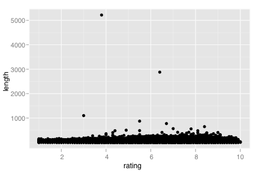

coord_cartesian
Cartesian coordinates
Details
The Cartesian coordinate system is the most familiar, and common, type of coordinate system. There are no options to modify, and it is used by default, so you shouldn't need to call it explicitly
See layer and qplot for more information on creating a complete plot from multiple components.
Examples
> qplot(rating, length, data=movies) + coord_cartesian() 